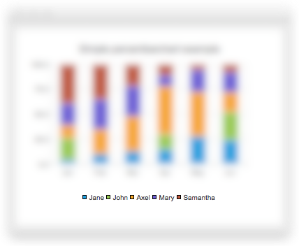

QLegend Class
The QLegend class displays the legend of a chart. More...
| Header: | #include <QLegend> |
| Instantiated By: | Legend |
| Inherits: | QGraphicsWidget |
Public Types
| enum | MarkerShape { MarkerShapeDefault, MarkerShapeRectangle, MarkerShapeCircle, MarkerShapeRotatedRectangle, MarkerShapeTriangle, …, MarkerShapeFromSeries } |
Properties
|
|
Public Functions
| virtual | ~QLegend() |
| Qt::Alignment | alignment() const |
| void | attachToChart() |
| QColor | borderColor() |
| QBrush | brush() const |
| QColor | color() |
| void | detachFromChart() |
| QFont | font() const |
| bool | isAttachedToChart() |
| bool | isBackgroundVisible() const |
(since 6.2) bool | isInteractive() const |
| QBrush | labelBrush() const |
| QColor | labelColor() const |
| QLegend::MarkerShape | markerShape() const |
| QList<QLegendMarker *> | markers(QAbstractSeries *series = nullptr) const |
| QPen | pen() const |
| bool | reverseMarkers() |
| void | setAlignment(Qt::Alignment alignment) |
| void | setBackgroundVisible(bool visible = true) |
| void | setBorderColor(QColor color) |
| void | setBrush(const QBrush &brush) |
| void | setColor(QColor color) |
| void | setFont(const QFont &font) |
(since 6.2) void | setInteractive(bool interactive) |
| void | setLabelBrush(const QBrush &brush) |
| void | setLabelColor(QColor color) |
| void | setMarkerShape(QLegend::MarkerShape shape) |
| void | setPen(const QPen &pen) |
| void | setReverseMarkers(bool reverseMarkers = true) |
| void | setShowToolTips(bool show) |
| bool | showToolTips() const |
Signals
(since 6.2) void | attachedToChartChanged(bool attached) |
| void | backgroundVisibleChanged(bool visible) |
| void | borderColorChanged(QColor color) |
| void | colorChanged(QColor color) |
| void | fontChanged(QFont font) |
| void | labelColorChanged(QColor color) |
| void | markerShapeChanged(QLegend::MarkerShape shape) |
| void | reverseMarkersChanged(bool reverseMarkers) |
| void | showToolTipsChanged(bool showToolTips) |
Detailed Description
A legend is a graphical object that displays the legend of a chart. The legend state is updated by QChart when series change. By default, the legend is attached to the chart, but it can be detached to make it independent of chart layout. Legend objects cannot be created or deleted, but they can be referenced via the QChart class.

See also QChart.
Member Type Documentation
enum QLegend::MarkerShape
This enum describes the shape used when rendering legend marker items.
| Constant | Value | Description |
|---|---|---|
QLegend::MarkerShapeDefault | 0 | Default shape determined by QLegend is used for the marker. This value is supported only for individual QLegendMarker items. |
QLegend::MarkerShapeRectangle | 1 | Rectangular markers are used. Marker size is determined by font size. |
QLegend::MarkerShapeCircle | 2 | Circular markers are used. Marker size is determined by font size. |
QLegend::MarkerShapeRotatedRectangle | 4 | Rotated rectangle shaped markers are used. Marker size is determined by font size. |
QLegend::MarkerShapeTriangle | 5 | Triangular markers are used. Marker size is determined by font size. |
QLegend::MarkerShapeStar | 6 | Star shaped markers are used. Marker size is determined by font size. |
QLegend::MarkerShapePentagon | 7 | Pentagon shaped markers are used. Marker size is determined by font size. |
QLegend::MarkerShapeFromSeries | 3 | The marker shape is determined by the series. In case of a scatter series, the legend marker looks like a scatter dot and is the same size as the dot. In case of a line or spline series, the legend marker looks like a small segment of the line. For other series types, rectangular markers are shown. If a lightMarker is specified for a series, the lightMarker will be shown and its size will be determined by the series marker size. |
See also markerShape.
Property Documentation
alignment : Qt::Alignment
How the legend is aligned with the chart.
Can be Qt::AlignTop, Qt::AlignBottom, Qt::AlignLeft, Qt::AlignRight. If you set more than one flag, the result is undefined.
Access functions:
| Qt::Alignment | alignment() const |
| void | setAlignment(Qt::Alignment alignment) |
backgroundVisible : bool
This property holds whether the legend background is visible.
Access functions:
| bool | isBackgroundVisible() const |
| void | setBackgroundVisible(bool visible = true) |
Notifier signal:
| void | backgroundVisibleChanged(bool visible) |
borderColor : QColor
This property holds the line color of the legend.
Access functions:
| QColor | borderColor() |
| void | setBorderColor(QColor color) |
Notifier signal:
| void | borderColorChanged(QColor color) |
color : QColor
This property holds the background (brush) color of the legend.
If you change the color of the legend, the style of the legend brush is set to Qt::SolidPattern.
Access functions:
| QColor | color() |
| void | setColor(QColor color) |
Notifier signal:
| void | colorChanged(QColor color) |
font : QFont
This property holds the font of the markers used by the legend.
Access functions:
| QFont | font() const |
| void | setFont(const QFont &font) |
Notifier signal:
| void | fontChanged(QFont font) |
labelColor : QColor
This property holds the color of the brush used to draw labels.
Access functions:
| QColor | labelColor() const |
| void | setLabelColor(QColor color) |
Notifier signal:
| void | labelColorChanged(QColor color) |
markerShape : MarkerShape
The default shape of the legend markers. The default value is MarkerShapeRectangle.
Access functions:
| QLegend::MarkerShape | markerShape() const |
| void | setMarkerShape(QLegend::MarkerShape shape) |
Notifier signal:
| void | markerShapeChanged(QLegend::MarkerShape shape) |
reverseMarkers : bool
This property holds whether reverse order is used for the markers in the legend.
This property is false by default.
Access functions:
| bool | reverseMarkers() |
| void | setReverseMarkers(bool reverseMarkers = true) |
Notifier signal:
| void | reverseMarkersChanged(bool reverseMarkers) |
showToolTips : bool
This property holds whether tooltips are shown when the text is truncated.
This property is false by default.
Access functions:
| bool | showToolTips() const |
| void | setShowToolTips(bool show) |
Notifier signal:
| void | showToolTipsChanged(bool showToolTips) |
Member Function Documentation
[virtual noexcept] QLegend::~QLegend()
Destroys the legend object. The legend is always owned by a QChart, so an application should never call this function.
void QLegend::attachToChart()
Attaches the legend to a chart. The chart may adjust the layout of the legend.
[signal, since 6.2] void QLegend::attachedToChartChanged(bool attached)
This signal is emitted when the legend is attached to or detached from the chart.
This function was introduced in Qt 6.2.
[signal] void QLegend::backgroundVisibleChanged(bool visible)
This signal is emitted when the visibility of the legend background changes to visible.
Note: Notifier signal for property backgroundVisible.
[signal] void QLegend::borderColorChanged(QColor color)
This signal is emitted when the border color of the legend background changes to color.
Note: Notifier signal for property borderColor.
QBrush QLegend::brush() const
Returns the brush used by the legend.
See also setBrush().
[signal] void QLegend::colorChanged(QColor color)
This signal is emitted when the color of the legend background changes to color.
Note: Notifier signal for property color.
void QLegend::detachFromChart()
Detaches the legend from the chart. The chart will no longer adjust the layout of the legend.
[signal] void QLegend::fontChanged(QFont font)
This signal is emitted when the font of the markers of the legend changes to font.
Note: Notifier signal for property font.
bool QLegend::isAttachedToChart()
Returns true, if the legend is attached to a chart.
bool QLegend::isBackgroundVisible() const
Returns the visibility of the legend background.
Note: Getter function for property backgroundVisible.
[since 6.2] bool QLegend::isInteractive() const
Returns whether the legend can be dragged or resized using a mouse when it is detached.
This function was introduced in Qt 6.2.
See also QLegend::setInteractive().
QBrush QLegend::labelBrush() const
Returns the brush used to draw labels.
See also setLabelBrush().
[signal] void QLegend::labelColorChanged(QColor color)
This signal is emitted when the color of the brush used to draw the legend labels changes to color.
Note: Notifier signal for property labelColor.
QList<QLegendMarker *> QLegend::markers(QAbstractSeries *series = nullptr) const
Returns the list of markers in the legend. The list can be filtered by specifying the series for which the markers are returned.
QPen QLegend::pen() const
Returns the pen used by the legend.
See also setPen().
[signal] void QLegend::reverseMarkersChanged(bool reverseMarkers)
This signal is emitted when the use of reverse order for the markers in the legend is changed to reverseMarkers.
Note: Notifier signal for property reverseMarkers.
void QLegend::setBackgroundVisible(bool visible = true)
Sets the visibility of the legend background to visible.
Note: Setter function for property backgroundVisible.
See also isBackgroundVisible().
void QLegend::setBrush(const QBrush &brush)
Sets the brush that is used to draw the background of the legend.
See also brush().
[since 6.2] void QLegend::setInteractive(bool interactive)
When interactive is true and the legend is detached, the legend is able to be moved and resized with a mouse in a similar way to a window.
The legend will automatically attach to an edge of the chart by dragging it off of that edge. Double clicking an attached legend will detach it. This is false by default.
This function was introduced in Qt 6.2.
See also QLegend::isInteractive().
void QLegend::setLabelBrush(const QBrush &brush)
Sets the brush used to draw the legend labels to brush.
See also labelBrush().
void QLegend::setPen(const QPen &pen)
Sets the pen that is used to draw the legend borders.
See also pen().
void QLegend::setShowToolTips(bool show)
When show is true, the legend labels will show a tooltip when the mouse hovers over them if the label itself is shown elided. This is false by default.
Note: Setter function for property showToolTips.
See also showToolTips().
bool QLegend::showToolTips() const
Returns whether the tooltips are shown for the legend labels when they are elided.
Note: Getter function for property showToolTips.
See also setShowToolTips().
[signal] void QLegend::showToolTipsChanged(bool showToolTips)
This signal is emitted when the visibility of tooltips is changed to showToolTips.
Note: Notifier signal for property showToolTips.